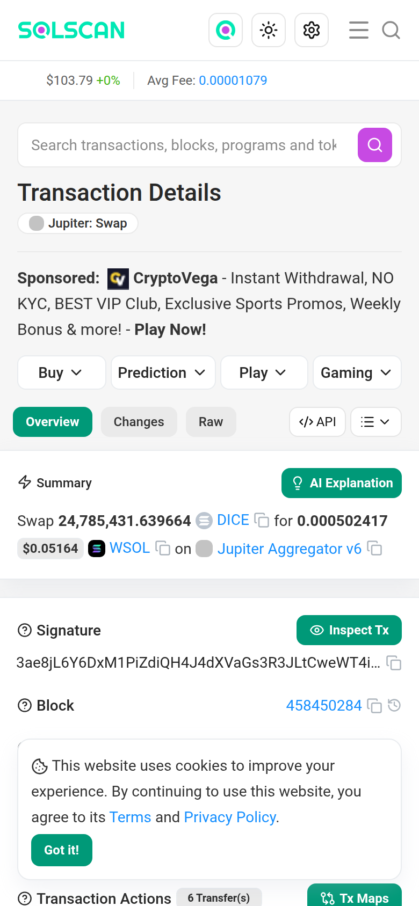
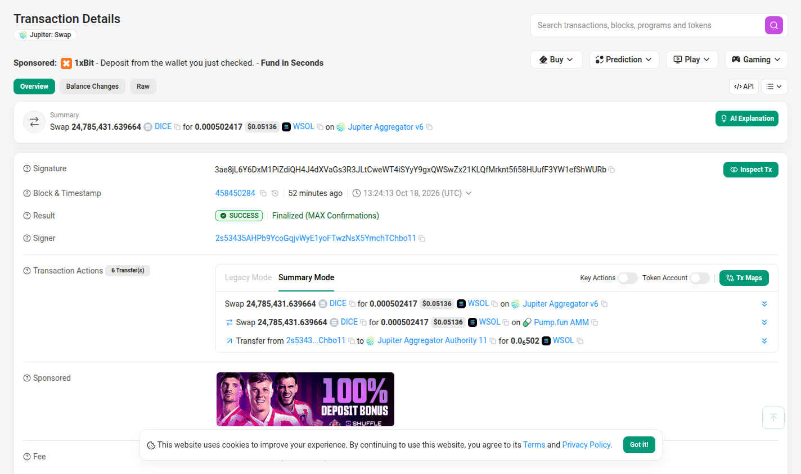
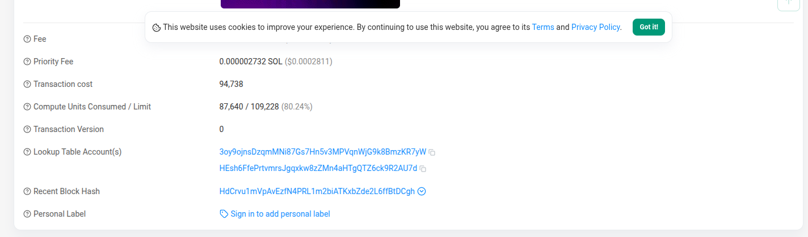
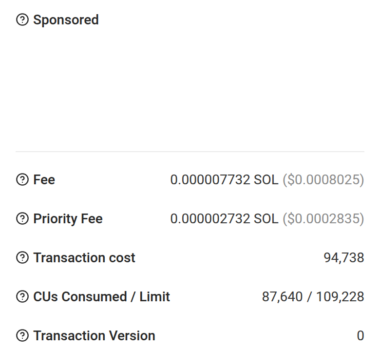
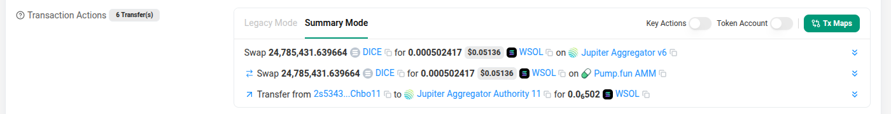
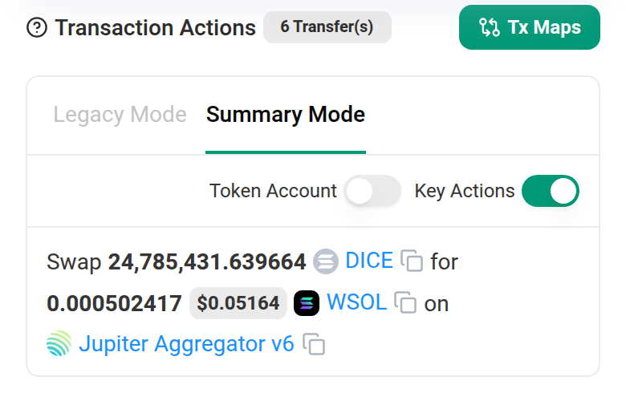
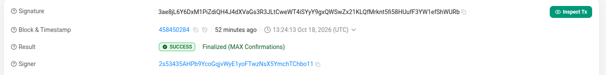
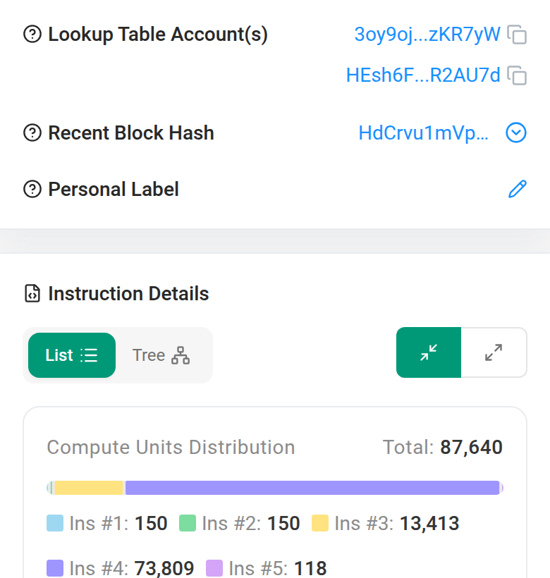

Concept redesign · Solscan transaction page · October 2026
Your receipt first, the blockchain second.
After a swap, Solscan answers “did it work, what did I get, what did it cost?” in the protocol’s words, with casino ads above the numbers and the fee a screen and a half down. This concept rebuilds the page as a receipt for the person who signed it, with every figure computed live from the real transaction.

solscan.io, first screen, Oct 18, 2026
- App
- Solscan, transaction page
- Features
- Receipt · Ledger · Route · Exact values
- Built as
- Working HTML, desktop and mobile, light and dark
- Data
- Real Jupiter swap 3ae8jL…ShWURb, slot 458450284
01 Receipt header
Answer the three questions in the first five seconds.
The first screen speaks for the protocol, not the person. It never says “you”, states the swap three times, and leads with a number that isn’t what arrived.

1 2 2 3 4 4 4 5 5 6 6 6 7 8 8- 1The title says what the page is, not what happened: “Transaction Details · Jupiter: Swap”. The person who signed is called “Signer”.
- 2Casino ads sit above the answer. “1xBit: Deposit from the wallet you just checked”, plus four ad menus (Buy, Prediction, Play, Gaming).
- 3The headline is after the pool fee but before the Jupiter and network fees: 0.000502417 WSOL. The wallet’s real change was +0.000494183 SOL, after a 0.1% Jupiter fee and the network fee.
- 4The same swap is stated three times on one screen: the Summary, then Actions rows 1 and 2, with identical amounts.
- 5The 88-character signature takes the first, widest row, and the block number comes before the human time.
- 6Green marks seven unrelated things: a tab, three tool buttons, the status badge, the finality text and the cookie button. Nothing reads as the signal.
- 715 copy icons on this screen, 51 in the page markup.
- 8“Signer” means you, and “Finalized (MAX Confirmations)” means it’s permanent. The page says neither.
Decisions
- One card answers the three questions. A status stamp (“Swap complete, final”), what you gave, what you got after every fee, and what it cost. That is the whole first screen.
- Net, not gross. “You got 0.000494 SOL” is the wallet’s real balance change. Today’s headline figure, 0.000502417, becomes the ledger’s “Pool paid out” subtotal, where it is reconciled.
- Plain SOL, not WSOL. The pool paid in wrapped SOL and the same transaction unwrapped it, so the receipt says SOL and explains WSOL once, on tap.
- “You” only when it’s true. If the connected wallet signed, the copy says “You gave”. Explorers are public, so anyone else sees “This wallet gave”. Try the toggle above.
- Rounded to read, exact on demand: 24.79M and 0.000494 on screen, 24,785,431.639664 and 0.000494183 one hover or tap away.
- Cost in dollars first, because 0.000014595 SOL means nothing to a newcomer and “$0.0015” does. It counts all three fees: network, the 1.25% pool fee and the 0.1% Jupiter fee.
- One green, two jobs: the success stamp and the single primary action. On a phone, Copy link and Share sit in a sticky bar.
Standalone screens: desktop 1440 · mobile 390 · dark
02 Where the money went
A ledger that adds up to the lamport.
Today the numbers never meet. The Jupiter fee is a “Transfer” row, the network fee is far below the fold, the pool’s 1.25% fee appears nowhere, and the real balance change lives in a separate tab.

1 5 2
1 5 2- 1The network fee is 868px down on desktop, behind the cookie banner, and 1,263px down on a phone, under an empty Sponsored slot.
- 2“Transaction cost: 94,738” is a block-space score (87,640 compute units plus signature, account-lock and other block-space costs), not a price, yet it is the row a newcomer reads as the price.
- 3Nothing adds the pieces up. The 0.1% fee appears only as “Transfer … for
0.0₆502WSOL to Jupiter Aggregator Authority 11”, and the net change sits in a separate Balance Changes tab. The Pump.fun pool’s own 1.25% fee, 12.7× the Jupiter fee, is only in the program’s event log. - 4A hidden cost goes unmentioned. The emptied DICE account still holds 0.00151 SOL of rent, about 3× what this swap was worth.
- 5USD reprices a finalized transaction on every load. The same 0.000002732 SOL priority fee reads $0.0002811 on one load and $0.0002835 on another.
Decisions
- One signed column, read top to bottom like a bank statement. No debit and credit columns to decode. Amounts stay ink with + and −. Selling isn’t a loss, so nothing turns red.
- Sale value, pool fee, Jupiter fee and network fee are the signed lines, and they add up to the change in the wallet: +0.000494183 SOL. The fee splits and the “Pool paid out” subtotal carry no sign, so nobody adds them twice. The 1.25% pool fee (0.02% to liquidity providers, 0.93% to Pump.fun, 0.30% to the coin creator) is decoded from the pool’s own SellEvent, and only shown when it matches the real transfer to the lamport. No explorer shows it today.
- Checked, not asserted. The total is compared with the wallet’s real balance before and after (10.714646341 → 10.715140524 SOL). The check mark only renders if they match to the lamport.
- Exact here, on purpose. This is where people verify, so the ledger shows all 9 decimals in tabular mono that lines up.
- The network fee splits into base (0.000005) and priority (0.000002732) behind one disclosure.
- “Good to know” is conditional. It shows only while the emptied DICE account is open and empty. Amber is reserved for it.
- USD is labelled and fixed: SOL at $103.79, the price in Solscan’s header on the 390px phone capture, about 5 minutes after the swap; a live page would fix it at swap time. The figure stops drifting on a finalized transaction.
Standalone screens: desktop 1440 · mobile 390
03 How it happened
One route, one switch, nothing removed.
Four overlapping view systems reshape the same list, and they don’t even start the same way on a phone and a desktop.

2 1 1 1 4 4 5
2 3 1- 112 controls change the view. Two modes (Legacy, Summary) and two toggles (Key Actions, Token Account) reshape one list. Next to them sit Tx Maps, Inspect Tx, an explainer button, three tabs, API and a menu (name tag, token info, report).
- 2“6 Transfer(s)” sits next to 3 rows on desktop and 1 row on a phone.
- 3Defaults differ by breakpoint. Key Actions is off on desktop and on by default on a phone, and the two toggles swap places.
- 4Rows 1 and 2 repeat the Summary’s amounts. Only the venue changes (Jupiter, then Pump.fun AMM), and nothing says that this is the route.
- 5The fee is written as a transfer between strangers: “Transfer from 2s5343…Chbo11 to Jupiter Aggregator Authority 11 for
0.0₆502WSOL”. - 6Even the full list doesn’t add up. Legacy Mode shows a 0.0013462 SOL deposit to Pump.fun leaving the wallet and never shows it coming back.
Decisions
- Simple tells the story as a route: your wallet → Jupiter → Pump.fun AMM → your wallet, one plain sentence per stop, with the money on the line itself (24.79M DICE, wallet → pool; 0.000502 SOL back). Jupiter picked the route but never held the DICE, and the route says so. The 0.1% Jupiter fee is a labelled branch with its amount, instead of a transfer row.
- Detailed shows every movement in execution order, each with a plain label, one signed amount, and from → to.
- The count always matches the rows: “7 of 7”. It includes the Pump.fun deposit return that today’s page never lists, marked “Missing today”.
- The proof is on screen: rows 1, 2, 5 and 7 plus the network fee sum to +0.000494183 SOL. Two temporary accounts were opened and closed, and their 0.00283464 SOL rent came back. That is different from the 0.00151 SOL still held in the empty DICE account.
- One switch, same default everywhere. Simple on every screen size. Your choice persists across transactions and lives in the URL (
?view=detailed), so a shared link opens where it was shared. - On a phone, the route becomes a vertical stepper and every row is at least 48px tall.
Standalone screens: Simple, desktop · Simple, mobile · Detailed, desktop · Detailed, mobile
04 Exact values, plain words
Precise when you ask, plain when you don’t.
The page prints amounts to six or nine decimal places everywhere. Yet its one tiny amount uses a notation that copies wrong, and its labels need a “?” to explain themselves.

2 3 3 3
4 4 4- 1A copy bug you can check in 30 seconds. “0.0₆502” is a subscript in the markup (
0.0<sub>6</sub>502). Select and copy it and you get0.06502, 129,522 times the real 0.000000502. Screen readers get the same text. - 2A “?” on every label, 22 in the page markup. The labels themselves need explaining.
- 3Shown, never explained: the 88-character signature, “Finalized (MAX Confirmations)” and “Signer”.
- 4On a phone, expert data gets the same weight as the fee: lookup tables, block hash, a compute-unit chart and instruction lists.
Decisions
- Every rounded or formatted value is a button. Hover or click on desktop; tap or long-press on a phone. It shows the exact value, base units and decimals, and a Copy exact action.
- Copy gives a plain number (no thousands separators, ASCII minus), so it pastes cleanly into a sheet or a wallet. Selecting text and pressing copy gives exact values too.
- Screen readers hear the exact amount: “24.79M, exactly 24,785,431.639664”.
- No subscript zeros, anywhere. Small amounts use three significant figures (0.000494) and costs lead with dollars ($0.0015).
- Terms are explained once, where they are used. Final, WSOL, signer, rent deposit, priority fee, slippage, compute units and lookup tables each get a dotted underline and a one-sentence definition.
- Technical details stay intact. Signature, block, signer, status, compute, version, lookup tables, blockhash, and Balance changes, Raw JSON, Inspect, API, Transaction map and Explain this transaction as text links, with Update name tag, Update token info and Report address from the menu, plus Personal label, beneath. Every address, token amount and program opens its own Solscan page from its popover, and the block number links to its block. Compute keeps the 94,738 “transaction cost” as a sub-line, labelled as a block-space score. It is a sticky rail on wide screens and one collapsed section on a phone.
- Ads stay, because they pay for a free explorer, in one labelled box after the answer, never between the user and their numbers.
Try it: select the “0.000494” above, copy, and paste anywhere. You get 0.000494183.
Standalone screens: exact value, desktop · exact value, mobile · plain words, desktop · technical, mobile · plain words, mobile
05 States
Same layout for every viewer and every outcome.
The scariest case for a newcomer is a failed swap. The receipt reads it from the same fields Solscan already has: your DICE was not moved, and you still paid the network fee.
Standalone screens: failed, desktop · failed, mobile · visitor view, live
06 System
The rules behind the screens.
One accent with a strict meaning, one spacing scale, tabular figures, and number rules that decide how every value is shown. Every text pair passes AA. The lowest is Ink 3 on Surface 3 at 4.6:1 (5.2:1 on paper). Green is only ever a fill behind dark text (7.2:1).
Standalone board: system, 1440 × 900
07 Write-up
What was wrong, what changed, and why.
Problems found
- No plain answer to “did it work, what did I get, what did it cost?”. The page speaks for the protocol and calls you “Signer”.
- The headline isn’t the outcome. It says 0.000502417 WSOL, after the pool’s fee but before the others. The wallet changed by +0.000494183 SOL after a 0.1% Jupiter fee and the network fee.
- Fees are hard to find. The fee is 868px down on desktop, under a cookie banner, and 1,263px down on a phone. “Transaction cost: 94,738” is a block-space score (87,640 compute units plus signature, account-lock and other block-space costs), not a price.
- Repetition and noise. The swap is stated three times on the first screen, there are 15 copy icons and 12 view controls, and green has seven jobs.
- Numbers that mislead. “0.0₆502” copies as 0.06502 (129,522× off), and USD reprices a finalized transaction on every load.
- Hidden costs. The Pump.fun pool kept a 1.25% fee (0.000006361 SOL, 12.7× the Jupiter fee) that the page never shows. At this pool’s current 1.25% rate, a $1,000 sale pays $12.50 to the pool, and today’s page never shows it. In all, this swap paid about $0.0015 in three fees. The emptied DICE account still holds 0.00151 SOL of rent, about 3× the swap’s value, and nothing says so.
- Inconsistent and incomplete. Defaults differ between phone and desktop, and the transfer list never shows a 0.0013462 SOL deposit coming back.
Decisions and why
- A receipt metaphor because the reader just paid for something. Outcome, then where the money went, then how, then technical details.
- Net amounts in “you” language, used only when the connected wallet signed. Anyone else reads “This wallet”.
- One number per fact, rounded for reading, with the exact value one hover or tap away. Copy always gives the exact plain number.
- A ledger checked against real balances, so the page proves its own arithmetic.
- Colour with a strict meaning. Green is success and the one primary action, amber is good to know, red is failure. Amounts stay ink.
- Restraint as the identity: one perforated hairline and a stamp-style status, hairlines instead of nested cards, and a single 8px scale.
- Ads kept but demoted: a labelled box after the answer, since the explorer is free because of them.
Kept for power users
- Detailed view: all 7 movements in execution order, with addresses, the balance sum and program steps with compute units. It also has the raw transaction JSON.
- Technical details: full signature with copy, block, signer, finality, compute limit and priority price. It also has version, both lookup tables, blockhash, and Balance changes, Raw JSON, Inspect, API, Transaction map and Explain this transaction links.
- Every control from today’s page has a place: the three tabs become sections, the modes and toggles become Simple / Detailed, Tx Maps, Inspect Tx, API, the Explanation button and the menu’s items become rail links, and the ad menus merge into one Sponsored box.
- Depth that sticks. Detailed persists across transactions and is in the URL, so you choose once.
- Exact values everywhere, including base units and decimals.
Nothing is removed. It is ordered by who needs it first.
Accessibility
- WCAG AA contrast for every text pair in both themes. The smallest text is Ink 3: 5.2:1 on light paper, 6.1:1 on dark.
- Status is never colour alone. Every state has an icon, a word and a colour.
- Exact values in accessible names, so no screen reader hears 0.06502.
- All controls are real buttons with visible focus rings. The Simple/Detailed switch is a radio group with arrow keys. Escape closes popovers and sheets and returns focus.
- Phone controls are at least 44px tall and ledger rows 48px. Sheets replace hover. Motion respects
prefers-reduced-motion, and the stamp never rotates.